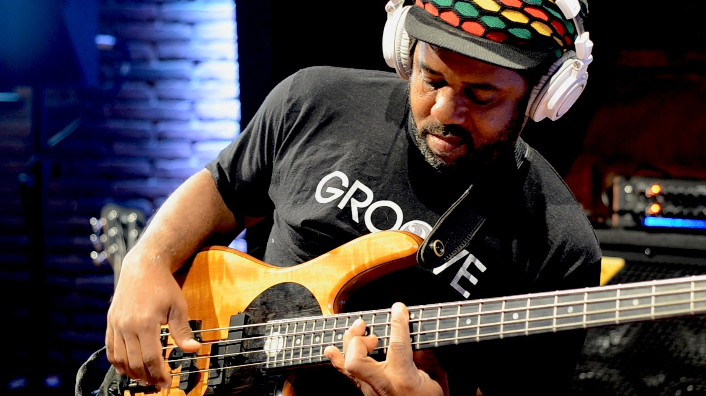
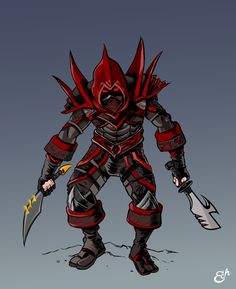
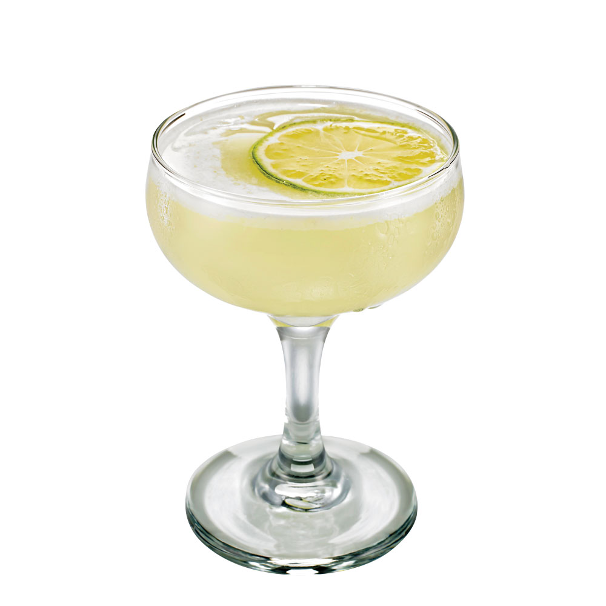
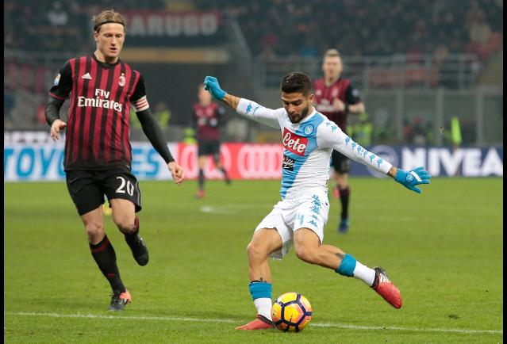
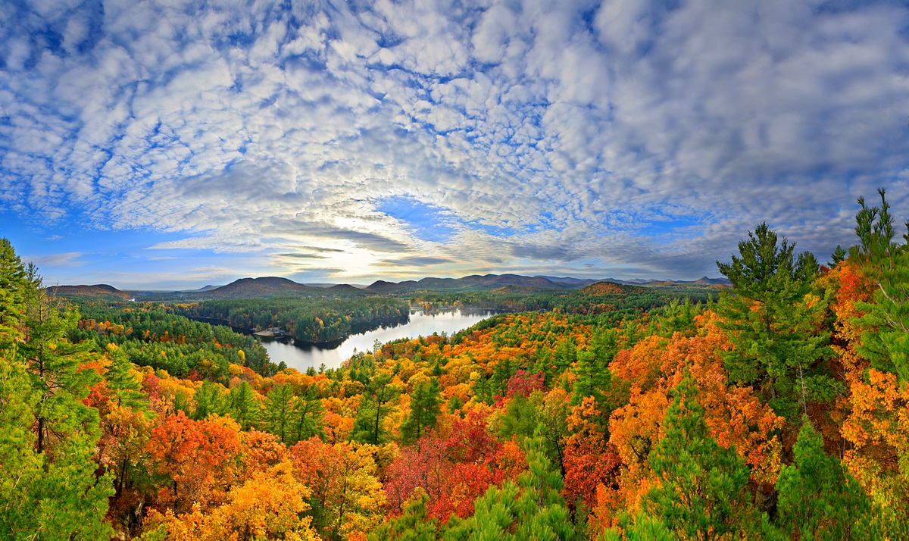
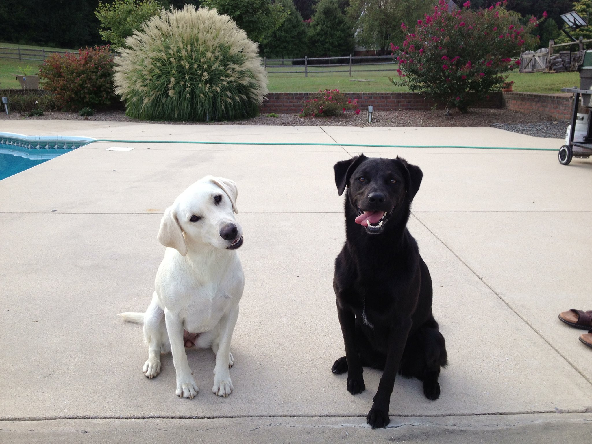
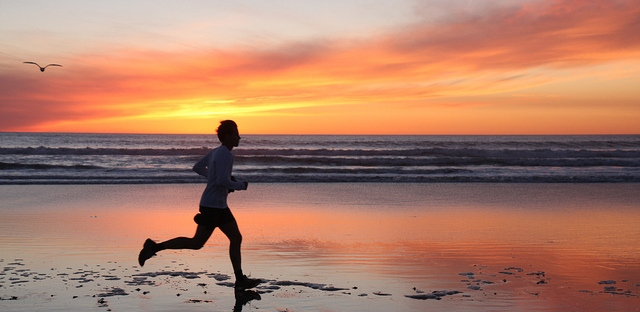
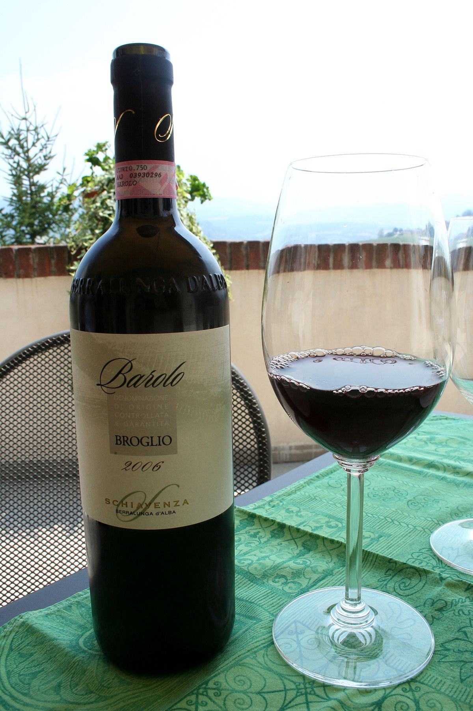
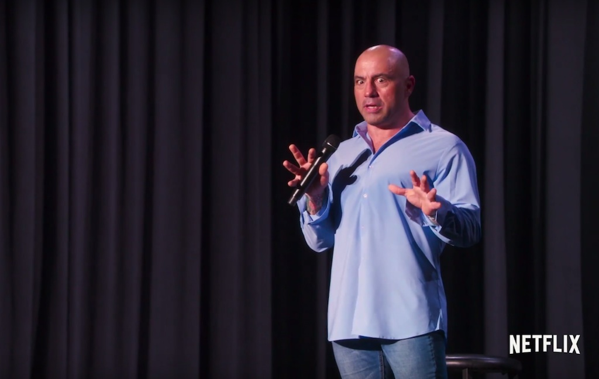

A backstage view of what the concerts I love to go to look like. Dubstep is by far my favorite genre of music and I've been going to shows since i was sixteen!

I grew up idolizing Victor Wooten as i learned to strum the bass along myself! He is an incredibly talented man who constantly blows the music community away with his diverse talents.

I have played world of warcraft since it came out and the player i have spent the most time on overall is my rogue. A stealthy cadaver with a fondness for shadows and stealth.

Here is my favorite cocktail of all time. The classic daquiri. Now most people think of daquiri's as this sludgey, sweet mess. However, any educated drinker would know a daquiri is simply lime juice, sugar and clear rum shaken into a coup or martini glass. Perfection.

I have played soccer since i could stand. The first word out of my mouth was ball. I quickly became obsessed with soccer as a child and have played competitevely my entire life. Not so much recently though!

Even though the change from fall to winter is a rather quick one here in NYC, one of my favorite times of the year is when i can pack up and head off to the mountains in the north to enjoy the unreal foliage.

These are my favorite two dogs in the entire world. The white one is mine, her name is Layla. The black one is my sisters and her name is London. I miss these babies everyday as they enjoy their amazing lives in the country back in Maryland.

Whether im at the beach or in the city, running is a part of my routine. I run at least 3 to 4 days a week for a minimum of 3 miles each time. It keeps me feeling healthy and sane.

Here it is. The best varietal and production of wine in my opinion. Barolo. Coming from piedmont, Italy specifically it is the nectar of the gods. Subtle tobacco notes followed by so much cherry notes you wouldn't believe. I love wine and have been studying it since i was 21 years old in order to further my advancement in the food and beverage industry.

Joe Rogan is a stand up comedian who never fails to get me laughing. I have been a huge fan of standup since middle school. Something about Joe Rogan's view on the world when he performs has me in stiches every single time.
Rick and Morty has become one of my favorite cartoons of all time. It took some getting used to but once you are invested in the characters it becomes a whirlwind of irony and humour.
I wish I was rich and had a house up in the mountains to use at my own leisure. I have loved skiing since I was a child. The speed and freedom the mountain offers is so much fun. Not to mention with good company it is always a blast.